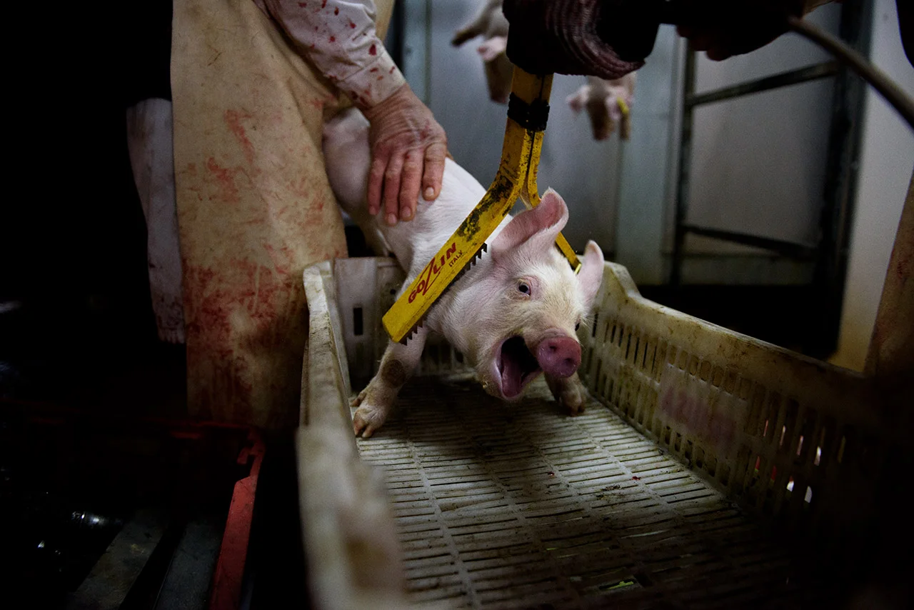

Como nosotros, los animales pueden sufrir o sentir placer, y deberían poder vivir su vida de la manera que deseen. Los animales son sensibles, es decir, son conscientes, están dotados de emociones y pueden experimentar un gran abanico de sensaciones. Al consumir animales, los condenamos a una vida de miseria y a una muerte terrible. Sólo en España, cada día, matamos 2 millones de animales en mataderos y decenas de millones de animales acuáticos son sacrificados. ¿Con qué derecho les robamos la vida?
La selección genética transforma el cuerpo de los animales para hacerlos el máximo de rentables posible, en detrimento de su salud. Los cerdos, las gallinas y las vacas han sido seleccionados para producir el máximo de carne. Cientos de miles de gallinas mueren en granjas incluso antes de llevarlas al matadero: su corazón, su esqueleto y sus pulmones son incapaces de soportar este crecimiento muscular acelerado.
Las gallinas ponedoras han sido seleccionadas genéticamente para poner el máximo de huevos posible, en detrimento de su salud. Mientras que una gallina salvaje pone alrededor de una veintena de huevos por año, las gallinas de granja actuales ponen más de 300. Esta productividad exigente en calcio (para la formación de las cáscaras de huevo) es una causa importante de descalcificación ósea, lo cual provoca fracturas frecuentes en las gallinas.
Desde el momento en que nacen, la mayoría de animales son maltratados. Los cerditos son castrados con un bisturí y se les corta la cola y los dientes, todo sin anestesia. A los terneros se les quema los cuernos con fuego, a los pollitos de gallina y de pato se les quema la punta del pico, a estos últimos también se les corta las garras, etc. Estas mutilaciones dolorosas son las prácticas estándar en la ganadería convencional, y muy corrientes en la ganadería ecológica.
La mayoría de animales de granja se encuentran encerrados en granjas inmensas con miles de individuos. Separando los animales por la fuerza, apretujándolos o aislándolos en jaulas, estas granjas privan a los animales de tener relaciones afectivas y los exponen a sufrimientos físicos y psicológicos. Actividades esenciales como correr, jugar, saltar o explorar son sencillamente imposibles en la inmensa mayoría de explotaciones ganaderas.
En las granjas de la industria láctea, el ternero es separado de su madre justo después de nacer o durante las 24 horas posteriores: no se volverán a ver nunca más. Es una experiencia verdaderamente traumática y, tras la separación, a menudo se buscan llamando durante días. Los terneros pasan las ocho primeras semanas de su vida solos en celdas individuales a menudo apenas más grandes que ellos: si se quedaran con su madre, beberían la leche que nos tienen que vender a nosotros.
Los animales sufren también al ser transportados, a veces durante decenas de horas en condiciones tan estresantes que algunos no pueden resistirlo. Aterrorizados y agotados, se les hace bajar del camión brutalmente para hacerlos entrar en el entorno ruidoso y desconocido que es un matadero.
Cuando los matamos, la mayoría de animales sólo tienen unas cuantas semanas o meses de existencia. Matamos a las gallinas broiler a los 40-45 días cuando tienen una esperanza de vida de 8 años, matamos a los cerdos a los 6 meses cuando pueden vivir 15 años, a los terneros a los 3-8 meses cuando pueden vivir 20 años...
A los animales se les electrocuta, se les gasea o se les rompe el cráneo con una pistola, y posteriormente se les desangra o degolla directamente. Algunos están mal "aturdidos" y recuperan la conciencia mientras se están desangrando.
Los pollitos macho de la industria de los huevos son gaseados o triturados vivos ya que, al no poner huevos y no ser de raza orientada a la producción de carne, son considerados basura por la industria. Los pollitos hembra frágiles, enfermos o en números superiores a los necesarios sufrirán el mismo destino.
La acuicultura impone unas densidades enormes a los animales, y es una fuente de estrés, enfermedades, heridas... Además, hace aumentar aún más el número de víctimas de la pesca, ya que a menudo se alimenta los peces de piscifactoría con pequeños peces salvajes. A pequeña escala o industrial, "sostenible" o en piscifactorías, la industria pesquera impone siempre una agonía larga y dolorosa a los animales.
- El Mejor Discurso Que Jamás Escucharás — Conferencia universitaria
- Norm, un corto
- Earthlings Documental sobre nuestra relación con los otros animales
- Dairy is scary — La indústria láctea explicada en 5 minutos
*Basado en contenido original de L214